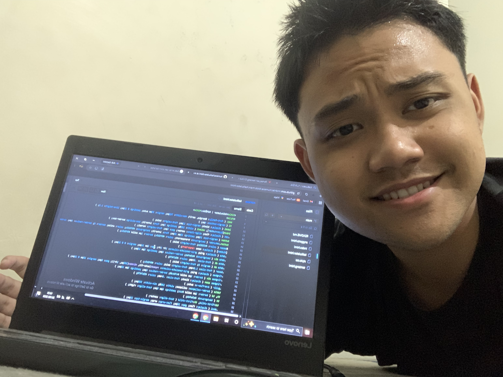
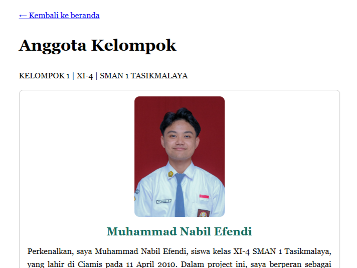
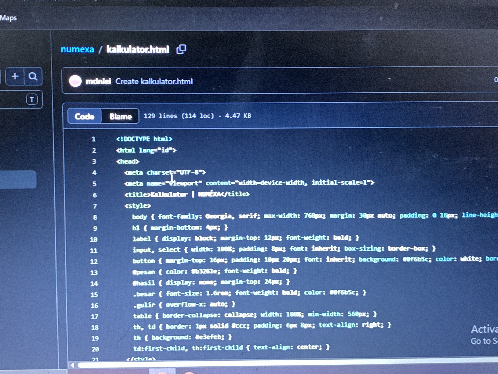
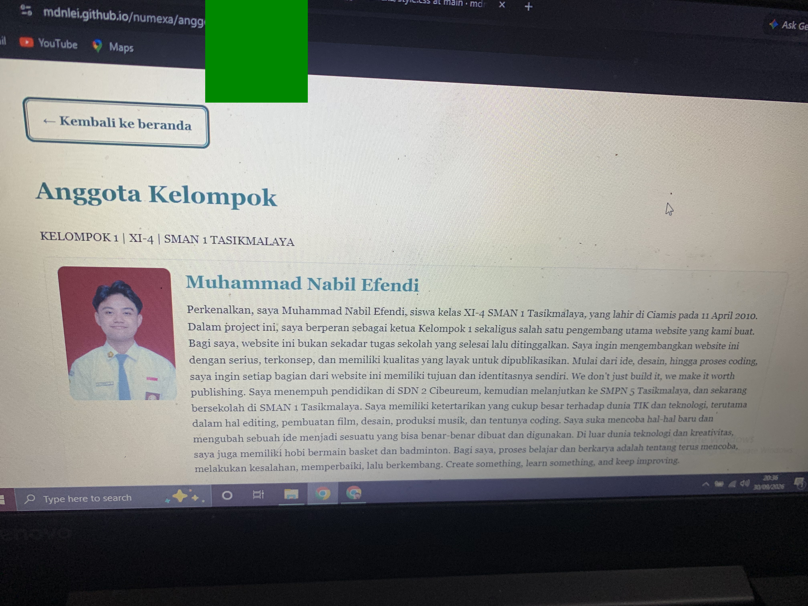
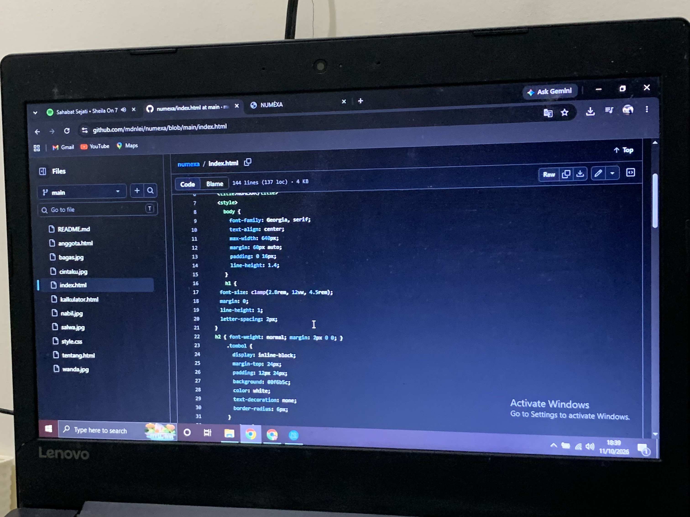
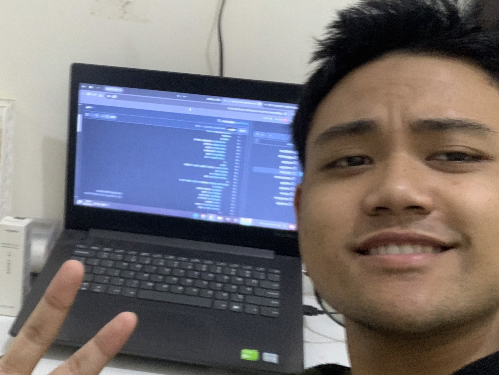

01 — Awal Mula
Awal dari gagasan dan perencanaan NUMÉXA.
Oleh Kelompok 1, XI-4 SMAN 1 Tasikmalaya
NUMÉXA merupakan kalkulator anuitas yang dikembangkan oleh Kelompok 1 dalam rangka Proyek Matematika Kelas XI-4 SMAN 1 Tasikmalaya, yang beranggotakan Nabil sebagai ketua sekaligus pengembang website, Wanda, Salwa, Cintaku, dan Bagas. Atas inisiatif dan gagasan Nabil, NUMÉXA dirancang tidak hanya sebagai bagian dari tugas proyek, tetapi sebagai sebuah website yang dibangun secara serius dengan visi untuk menjadi platform resmi yang dapat dipublikasikan dan dikembangkan lebih lanjut di masa mendatang. NUMÉXA dirancang untuk mempermudah pengguna dalam melakukan perhitungan anuitas serta memberikan hasil yang lengkap, jelas, dan mudah dipahami melalui pengalaman digital yang modern dan fungsional.
Mulai HitungDari sebuah ide, menjadi sesuatu yang nyata.

Awal dari gagasan dan perencanaan NUMÉXA.

Proses merancang konsep dan menentukan arah pengembangan website.

Momen ketika rancangan mulai diwujudkan menjadi website.

Pengembangan fitur agar NUMÉXA dapat digunakan dengan mudah.

Meninjau kembali tampilan dan fungsi sebelum versi pertama dirilis.

Langkah awal NUMÉXA sebagai produk digital dari Kelompok 1.